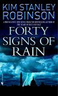

Robinson's books are imaginative stories which have their roots in fact and then explore what-if scenarios. Fourty Signs of Rain is part of a trilogy that explores the consequences of global warming. The story line has global implications, but the story is told from the perspective of a few characters who are leading somewhat ordinary lives in the midst of a changing world. The book combines fact, humor, and a lively style for a great read.
This is the second book in a trilogy that starts with Fourty Signs of Rain. This book is even more compelling and entertaining that the first book in the trilogy. Robinson again combines fact, humor, and real characters to entertain and educate.